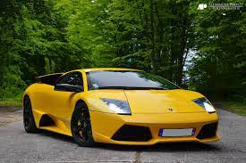

<div class="container mt-5">
  <div class="card">
    <div class="head">
      <h2>The Man's Mobile Lamborghini</h2>
    </div>
    <div class="row mt-4">
      <div class="col-md-6">
        
        

      </div>
      <div class="col-md-6">
        <h3>Lamborghini</h3>
        <p>Automobili Lamborghini S.p.A. (Italian pronunciation: [autoˈmɔːbili lamborˈɡiːni]) is an Italian brand and manufacturer of luxury sports cars and SUVs based in Sant'Agata Bolognese. The company is owned by the Volkswagen Group through its subsidiary Audi.

          Ferruccio Lamborghini, an Italian manufacturing magnate, founded Automobili Ferruccio Lamborghini S.p.A. in 1963 to compete with Ferrari. The company was noted for using a rear mid-engine, rear-wheel drive layout. Lamborghini grew rapidly during its first decade, but sales plunged in the wake of the 1973 worldwide financial downturn and the oil crisis. The firm's ownership changed three times after 1973, including a bankruptcy in 1978. American Chrysler Corporation took control of Lamborghini in 1987 and sold it to Malaysian investment group Mycom Setdco and Indonesian group V'Power Corporation in 1994. In 1998, Mycom Setdco and V'Power sold Lamborghini to the Volkswagen Group where it was placed under the control of the group's Audi division.

          New products and model lines were introduced to the brand's portfolio and brought to the market and saw an increased productivity for the brand. In the late 2000s, during the worldwide financial crisis and the subsequent economic crisis, Lamborghini's sales saw a drop of nearly 50 per cent.

          Lamborghini currently produces the V12-powered Aventador and the V10-powered Huracán, along with the Urus SUV powered by a twin-turbo V8 engine. In addition, the company produces V12 engines for offshore powerboat racing. Lamborghini Trattori, founded in 1948 by Ferruccio Lamborghini, is headquartered in Pieve di Cento, Italy and continues to produce tractors.</p>
        <ngb-rating [(rate)]="currentRate"></ngb-rating>
        <hr>
        <pre>Rate: <b>{{currentRate}}</b> of 8</pre>
      </div>
    </div>
  </div>
</div>


